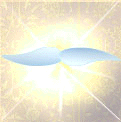

アグニャ チャクラ
アグニャは第三の眼と呼ばれることもありますが、それは脳の中央に位置しています。このチャクラが開かれ健康であるときは、クンダリニが通過し、思考の波を鎮静させます。その利点は、思考と思考のあいだ（言葉と言葉のあいだ）の空白も長くなるということです。するとこの空白もしくは静けさに注意力が結びつけられて、完全な注意深い状態である思考のない意識に到達します。すると精妙なシステムはただの送り手ではなく、受けとるための道具になるのです。
うるさく鳴り響いているラジオのスイッチを切るように、こころのなかでいつもペチャクチャしている声がとまると、大変な開放感と平安を感じます。長い時間思考のない意識を保つことができるようになるにつれ、全く新しい宇宙の発見が始まります。神の源から常に発散されている生命のエネルギーをよりよく取り入れられるようになります。あなた自身のヴァイブレーションの値が驚くほど上がり、世界のより強い肯定的な力になります。意志によって受け取る力を解放することを学び、無限のメインフレーム・データベースが存在していて、それは自分が好きなときに接続することができるものだということを理解します。あなたは自分が、いつも完全で愛を与える注意力を受け取っているネットワークが、とても巨大であると同時に精密なパーツでできていることに謙虚な気持ちになります。
アグニャ チャクラは宇宙的な「データベース」、もしくは宇宙的無意識へ到達する道です。これが開くことなしに、クンダリニが通り抜けてサハスララに入り、あなたのスピリットが聖なるものにつながることはできません。
このチャクラをブロックする主な問題は、エゴとスーパーエゴです。この二つの本質的な構造物は、精神的、身体的な活動のし過ぎによって右側が、または感情的な活動のし過ぎで左側が風船のように膨れあがる傾向があります。これが膨れ上がった状態では、真ん中のチャンネルがブロックされてしまい、クンダリニがそこを通って頭頂部を突き抜けるのを止めてしまいます。このようなわけで、私たちの行動は振り子のように右−左と、「とても幸せ」から「とても悲しい」へ、または、「とても腹立たしい」から「とても安らか」へ、あるいは、「とても生き生き」から「疲れきっている」へと行ったり来たりしているのです。
エゴがあまりに膨れ上がってしまうと、いろいろな問題のある態度や振る舞いをすることになります。ある社会にとって最も有害なのは、非難や侮辱の原因となる傲慢と攻撃性でした。これらのネガティヴな態度は身体の中の細胞に緊張をもたらし、部位によっては腺や内蔵の機能不全の主な原因になります。この機能不全が病気になっていくのです。私たちの精妙な身体の中でつくりだされた緊張を弛めるために、私たちは「許し」という肯定的な態度を発展させなければなりません。
ハートからくる「許し」は精妙な身体の中で、「慈悲」という形で肯定的な強い力を送っています。「許し」は、ほかのいろいろなチャクラを浄化するのに不可欠な治療です。過去からの緊張は、アグニャ
チャクラのみならず、身体中に蓄積する傾向があるからです。
私たちのほとんどが持っている、アグニャ
チャクラをブロックするもう一つのコンディショニング（条件づけ）は、「心配」です。心配することが不安を身体の中に送り、それによっても精妙な身体がスムーズに機能することを障害する緊張が生まれます。心配性の習慣は、自分自身で全てを考えやっていかなければならないという、エゴ中心の間違った信念から来ます。神が実際「全てをなさる」ということを知ると、喜びを感じるでしょう。心配するかわりに、「問題をちょっと棚上げ」しておいて、神にそれを何とかしてもらいましょう。心配したり否定的な注意力をそれに注いだりすることをやめることが、今まで私たちが、狭く創造的でない、エゴ中心の考えを通して解決しようとしたときより、ずっと効果的な方法でその解決を促すことは驚くべきことです。
最後に、自分自身に攻撃的であることは、他人を攻撃するのと同じように悪い、というのもそれがもう一つの障害となる風船状の構造物である、スーパーエゴを膨らませるからです。ここには、過去の全てのコンディショニング（条件づけ）がたまっています。スーパーエゴに陥りやすい人は、落ち込みやすく、動作が遅いか…ただ混乱してぐちゃぐちゃになりがちです。